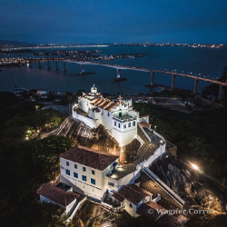

Curiosidades do Convento da Penha
- A "árvore que chora". Os devotos achavam que essa árvore era milagrosa, isso em 1972. Os fiéis, de tanto retirar pedaços dela, acabaram por matar a pobrezinha.
- Arquitetura. A cidadela que é o convento é a única construção em estilo de castelo medieval do Brasil, e ainda, inclusive, com uma ruína de senzala.
- Romaria. Em 1573, há a notícia da primeira romaria ao alto do Morro da Penha realizada pelos jesuítas Luís de Grã e Inácio de Tolosa, em agradecimento por terem sobrevivido a um naufrágio.
- Festa da Penha. Além do significado religioso que tem para o Espírito Santo, é uma das mais importantes festas para o movimento turístico capixaba, crescendo a cada ano. É o maior evento religioso do Estado, e a terceira maior festividade mariana do Brasil, e que completa neste ano 449 anos de festividades ininterruptas.
- Mendigos. Os mendigos que ficavam na subida do Convento da Penha eram uns 15 aproximadamente. "Eu me lembro bem quando criança de dois personagens que eu tinha muito medo: uma senhora muito feia, creio que leprosa, que agradecia a todos as esmolas, desejando boa sorte, e era tratada como Dona Boa Sorte", diz Manoel Goes.
- Praga do frade. Em 1653, houve o saque dos holandeses ao Convento da Penha, às vésperas do término do domínio holandês no Brasil. Nesta ocasião, os holandeses levaram o Menino Jesus. O frei Francisco da Madre de Deus, que era o guardião do Convento da época, jogou uma praga neles.
- Visita do imperador em 1860. Viagem do Imperador D. Pedro II ao Espírito Santo e visita ao Convento da Penha, sendo guardião Frei João Valadares nomeado pregador imperial (28/1).
- Franciscanos. Em 1955, através do Título de Custódia para Serviço do Patrimônio da União, e homologado pelo Instituto do Patrimônio Histórico e Artístico Nacional (Iphan), houve a entrega definitiva do Convento aos franciscanos por licença da Santa Sé (Vaticano).
- Obras de arte. Há no Convento da Penha obras de arte de vários autores, de várias épocas, destacando-se as de Benedito Calixto, de Vitor Meireles e as de Carlo Crepaz. A autoria da tela de Nossa Senhora das Alegrias e de Nossa Senhora da Penha, trazidas por Frei Pedro Palácios, são de autor desconhecido.
- Queda lá do alto. Em uma Festa da Penha de 1980 contam que um devoto caiu no despenhadeiro que fica para o quartel do 38ºBI, não sofrendo nenhum arranhão. O caso curioso já foi ouvido por outros moradores, mas a reportagem não encontrou registros sobre a história.
- Nave extraterrestre. Em uma Romaria dos Homens, em 1988, um dentista diz ter visto uma extraterrestre. Segundo ele, durante a missa da Romaria dos Homens, em frente à capela São Francisco, avistou um ponto luminoso que alternava cores, entre o laranja, o azul e o vermelho.
- Notre Senhora da Penha ou das Alegrias? A devoção inicial era a Nossa Senhora das Alegrias, também conhecida como Nossa Senhora dos Prazeres.
